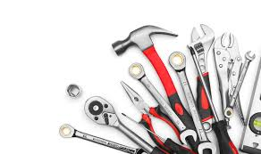

أهمية استخدام أدوات صيانة الخزانات المناسبة
تعتبر أدوات صيانة الخزانات من العناصر الأساسية التي لا غنى عنها للحفاظ على نظافة وسلامة خزان المياه. فبدون الأدوات والمعدات المناسبة، تصبح عملية التنظيف والتعقيم صعبة وقد لا تحقق النتائج المرجوة.
في شركة اتقان الخليج، ندرك أهمية استخدام الأدوات الصحيحة في صيانة الخزانات، ولذلك نقدم لك هذا الدليل الشامل لتعرف على أفضل أدوات تنظيف وتعقيم الخزانات التي تضمن لك مياهًا نقية وآمنة لعائلتك.

مجموعة متكاملة من أدوات صيانة وتنظيف الخزانات